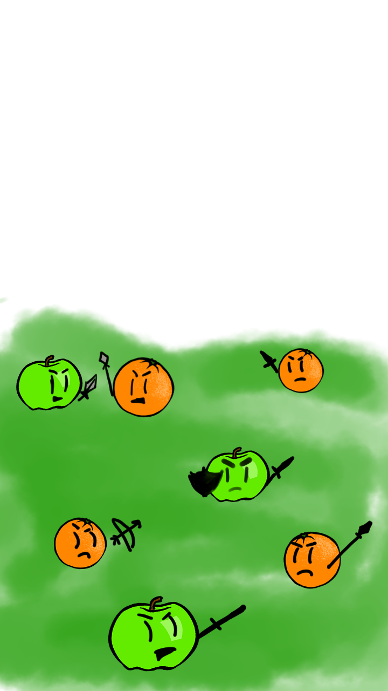
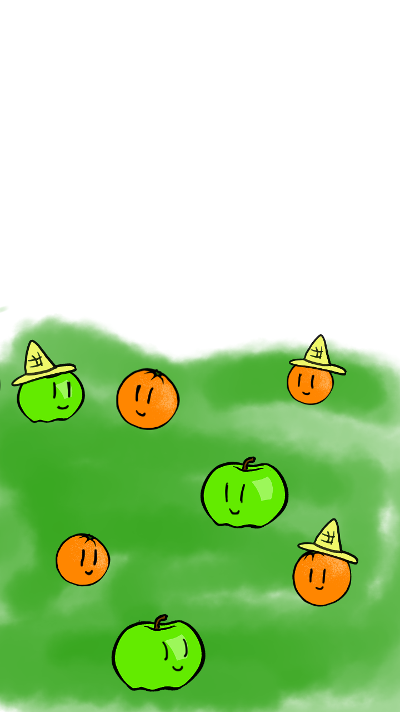

The banana agreed to be a judge, but would need more information to judge the merit of each fruit.
It asked each to choose a thing to fly under by which it would make its choice. But what words to choose? The choice is yours…

No one quite knows how it happened, but someone tried to compare apples and oranges, and that’s how it all began.
Battles for superiority broke out all over the land, and there was carnage everywhere.
They knew there could only be one solution to end the juice-shed.
They took their disagreement to the only impartial judge—the celestial banana.

For many years, the fruits lived in harmony. The apples and the oranges always knew they were different,
but this didn’t bother them. They just accepted that they were incomparable and left it at that.